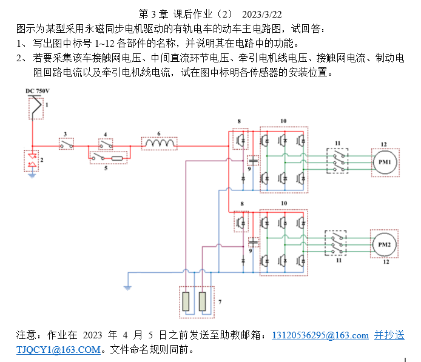

第三章作业1
要求
收到的作业文件
2050859兰俊毅_第3章课后作业（1）.docx
2050889刘普栋_第三章作业（1）.doc
2051104魏吾达_第三章作业（1）(1).doc
2051164何鹏_读书报告4.docx
2051389胡泓睿_第三章作业1.docx
2051873刘璧宁_读书报告4.docx
2051989郑迅_读书报告4.docx
2052741黄雨康_读书报告4.docx
2052755占杨_读书报告4.pdf
2052758夏晨曦_电力牵引作业3.docx
2052759王洋_读书报告4.docx
2053426张昕_读书报告4.docx
2053531胡慧涛_读书报告4.docx
2054209王德龙_读书报告4.docx
第三章作业2
要求

收到的作业文件
2050552杨家琛_读书报告3.2.pdf
2050674肖祺_第三章作业2.docx
2050859兰俊毅_第3章 课后作业（2）.docx
2050889刘普栋_第3章课后作业（2）.doc
2050962姚雯锦_第三章课后作业2.docx
2051028肖洋_第三章作业（2）.docx
2051103赵亚图_读书报告5.pdf
2051104魏吾达_第三章作业（2）.docx
2051146吴乐诗_第3章作业（2）.docx
2051163严梓豪_读书报告3.2.docx
2051164何鹏_第三章作业2.docx
2051357张东海_读书报告5.pdf
2051386王国璋_第三章作业（2）.docx
2051388潘胰增_第三章（2）.pdf
2051389胡泓睿_第三章作业2.docx
2051408饶茜_读书报告5.pdf
2051512孙汤嘉禾_第三章作业2.docx
2051600高志扬_第三章课后作业（2）.docx
2051658陈霄_第3章课后作业（2）.docx
2051768张文阳_第三章作业（2）.docx
2051873刘璧宁_读书报告5.docx
2051884甄楚晗_读书报告5.docx
2051989郑迅_读书报告5.docx
2052042施楷汶_读书笔记3.2.docx
2052231于淼_第3章课后作业（2）.docx
2052232徐美欣_读书报告5.pdf
2052359张鹏祥_第三章作业（2）.docx
2052362祝左容_读书报告5.pdf
2052557赵林轩_第五次作业.pdf
2052741黄雨康_读书报告5.docx
2052755占杨_读书报告5.pdf
2052758夏晨曦_第三章课后作业（2）.pdf
2052759王洋_读书报告5.docx
2052859陈镁云_读书报告5.pdf
2053329秦之涣_电力牵引第五次作业.docx
2053426张昕_读书报告5.docx
2053531胡慧涛_读书报告5.docx
2053542于微雨_读书报告5.pdf
2053543袁文昊_读书报告5.docx
2053784舒承程_第三章作业2.docx
2053785戴金真_读书报告5.docx
2053950田程_第三章课后作业二.docx
2054209王德龙_读书报告5.docx
2054212周彦铭_读书报告5.pdf
2054437晋美朗杰_第三章作业2 .pdf
第三章作业3
要求
收到的作业文件
2050552杨家琛_读书报告3.3.pdf
2050674肖祺_读书报告6.docx
2050859兰俊毅_第3章 课后作业（3）.docx
2050889刘普栋_第3章课后作业（3）.docx
2050962姚雯锦_第三章课后作业3.docx
2051028肖洋_ 第三章课后作业（3）.pdf
2051103赵亚图_第六次读书报告.pdf
2051104魏吾达_第三章课后作业（3）.docx
2051146吴乐诗_ 第3章作业（3）.docx
2051163严梓豪_读书报告3 .3.pdf
2051164何鹏_第三章课后作业3.docx
2051357张东海_读书报告6.pdf
2051386王国璋_第3章课后作业（3）.docx
2051388潘胰增_ 第三章（3）.docx
2051389胡泓睿_第三章作业3.docx
2051408饶茜_ 的读书报告6.pdf
2051512孙汤嘉禾_第三章作业（3）.docx
2051512孙汤嘉禾_第三章作业（3）推荐文献.docx
2051600高志扬_第3章课后作业 (3).docx
2051658陈霄_第3章课后作业（3）.docx
2051768张文阳_第三章第三次作业.docx
2051873刘璧宁_读书报告6.docx
2051873刘璧宁_读书报告6_南京地铁S8线辅助逆变器故障原因分析及改进_蒋玉虎.pdf
2051884甄楚晗_读书报告6.docx
2051989郑迅_ 读书报告6.docx
2052042施楷汶_读书报告3.3.docx
2052231于淼_ 第3章课后作业（3）.docx
2052232徐美欣_读书报告6.pdf
2052359张鹏祥_第三章作业（3）.docx
2052362 祝左容_读书报告6.pdf
2052557赵林轩_第六次作业.pdf
2052741黄雨康_读书报告6.docx
2052755占杨_读书报告6.pdf
2052758夏晨曦_第三章作业（3）.docx
2052759王洋_读书报告6.docx
2052859陈镁云_读书报告6.pdf
2053329秦之涣_ 电力牵引技术第六次作业.docx
2053426张昕_ 读书报告6.docx
2053531胡慧涛_ 读书报告6.docx
2053542于微雨_读书报告6.zip
2053784舒承程_读书报告6.docx
2053785戴金真_读书报告6.docx
2053950田程_第三章课后作业三.docx
2054209王德龙_读书报告6.docx
2054212周彦铭_读书报告6.pdf
2054212周彦铭_（文献推荐）高速列车永磁同步牵引系统研究与应用_屈斌.pdf
2054437晋美朗杰_第三章课后作业（3）.pdf
第四章作业1
要求
收到的作业文件
2050552杨家琛_读书报告7.pdf
2050674肖祺_读书报告7.docx
2050859兰俊毅_读书报告7.docx
2050889刘普栋_读书报告7.docx
2050962姚雯锦_读书报告7.docx
2051028肖洋_读书报告7.pdf
2051103赵亚图_读书报告7.pdf
2051104魏吾达_读书报告7.docx
2051146吴乐诗_第四章作业1.docx
2051163严梓豪_读书报告7.pdf
2051164何鹏_读书报告7.docx
2051357张东海_读书报告7.pdf
2051386王国璋_读书报告7.pdf
2051388潘胰增_第四章作业1.docx
2051389胡泓睿_读书报告7.pdf
2051408饶茜_读书报告7.pdf
2051512孙汤嘉禾_读书笔记7.docx
2051600高志扬_读书报告7.docx
2051658陈霄_电力牵引第四章作业(1).docx
2051768张文阳_读书报告7.docx
2051873刘璧宁_读书报告7.docx
2051884甄楚晗_读书报告7.docx
2051989郑迅_读书报告7.docx
2052042施楷汶_读书报告7.docx
2052231于淼_读书报告7.docx
2052232徐美欣_读书报告7.pdf
2052359张鹏祥_读书报告7.docx
2052362祝左容_读书报告7.pdf
2052557赵林轩_读书报告7.pdf
2052741黄雨康_读书报告7.docx
2052755占杨_读书报告7.pdf
2052758夏晨曦_读书报告7.pdf
2052759王洋_读书报告7.docx
2052859陈镁云_读书报告7.pdf
2053329秦之涣_读书笔记7.pdf
2053426张昕_读书报告7.docx
2053531胡慧涛_读书报告7.docx
2053542于微雨_读书报告7.docx
2053784舒承程_读书报告7.docx
2053785戴金真_读书报告7.docx
2053950田程_读书报告7.pdf
2054209王德龙_电力牵引与控制第四章作业1.docx
2054212周彦铭_读书报告7.pdf
2054437晋美朗杰_读书报告7.pdf
第五章作业
要求
收到的作业文件
2050552杨家琛_读书报告5.1.pdf
2050674肖祺_读书报告8.docx
2050859兰俊毅_电力牵引第五章作业.docx
2050889刘普栋_第五章作业.docx
2051028肖洋_ 第五章作业.docx
2051103赵亚图_读书报告8.pdf
2051104魏吾达_电力牵引第五章作业.doc
2051146吴乐诗_ 电力牵引第五章作业.docx
2051163严梓豪_读书报告5.1.pdf
2051164何鹏_电力牵引第五章作业.docx
2051357张东海_第8次读书笔记.pdf
2051386王国璋_电力牵引第五章作业.pdf
2051388潘胰增_ 第五章作业.docx
2051408饶茜_ 第8次读书笔记.pdf
2051512孙汤嘉禾_读书笔记8.docx
2051600高志扬_电力牵引第五章作业.docx
2051658陈霄_电力牵引第五章作业.docx
2051884甄楚晗_读书报告8.docx
2052042施楷汶_读书报告5.1.docx
2052231于淼_ 第5章课后作业.docx
2052232徐美欣_读书报告8.pdf
2052359张鹏祥(文件夹)
2052362祝左容_读书报告8.pdf
2052557赵林轩_电力牵引第五章作业.pdf
2052741黄雨康_ 读书报告8.docx
2052755占杨_读书报告8.pdf
2052759王洋_ 读书报告8.docx
2052859陈镁云_读书报告8.pdf
2053329秦之涣_电力牵引第八次作业 .pdf
2053426张昕_ 读书报告8.docx
2053531胡慧涛_读书报告8.docx
2053542于微雨_电力牵引第五章作业.docx
2053784舒承程(文件夹)
2053785戴金真_第五章作业.docx
2053950田程_第五章作业.docx
2054209王德龙_电力牵引与控制第五章作业.docx
2054212周彦铭(文件夹)
2054437晋美朗杰(文件夹)